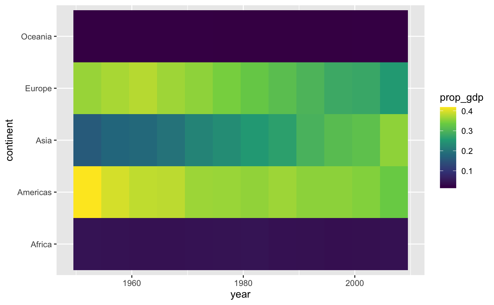
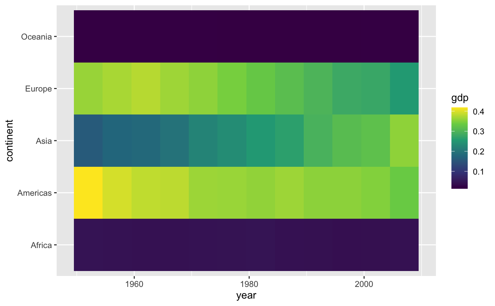

h_geom_tile_prop_over_time.RdTiles the are filled according to proportion where total in x is denominator
h_geom_tile_prop_over_time( mapping = NULL, data = NULL, position = "identity", na.rm = FALSE, show.legend = NA, inherit.aes = TRUE, ... )
| ... |
|---|
#>#> #> #>#> Warning: package ‘tibble’ was built under R version 3.6.2#> Warning: package ‘purrr’ was built under R version 3.6.2#> #> #> #> #>gapminder::gapminder %>% mutate(gdp = gdpPercap * pop) -> my_gapminder my_gapminder %>% group_by(year, continent) %>% summarise(gdp = sum(gdp)) %>% mutate(prop_gdp = gdp/sum(gdp)) %>% ggplot() + aes(x = year) + aes(y = continent) + geom_tile() + aes(fill = prop_gdp) + scale_fill_viridis_c()#># the function and proto "StatPropovertime"#> [1] "StatPropovertime""StatPropovertimetext"#> [1] "StatPropovertimetext"# use function library(ggplot2) library(magrittr) my_gapminder %>% ggplot() + aes(x = year) + aes(y = continent) + h_geom_tile_prop_over_time() + aes(fill = gdp) + scale_fill_viridis_c()